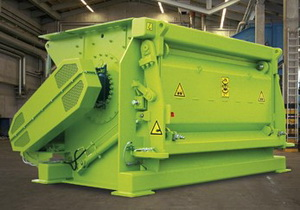
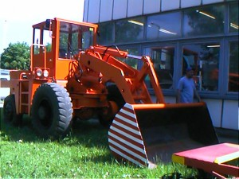
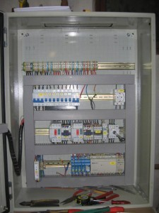
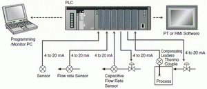

Főbb szolgáltatásaink:
Bálázógép javítása
A megfelelő szaktudással rendelkező kollégáink szakmai csapatokat alkotva végzik el a bálázó gép javítási munkálatait.
Meglévő partneri kapcsolataink segítségével a szükséges cserealkatrészek biztosítását lehetőségeink szerint kedvező áron és gyorsan tudjuk biztosítani, hogy a munka a szükségesnél tovább egy pillanatig se szüneteljen.

Tömörítő
Ha a tömörítő gép elromlik, a hatékonyság csökken, és ezzel egyenesen arányosan a költségek megnőnek. De a tömörítő gép javításával ez az arány szinte a kezdeti állapotra varázsolható vissza. Magasan képzett szakembereink biztosítják megrendelőink számára a gyors és hatékony tömörítő gép javítást, melyet az egyéni igényeknek megfelelően a helyszínen vagy a telephelyünkön is elvégzünk.

Gépek teljes körű szerelése
Gépkocsiparkunk lehetővé teszi, hogy az ország bármely pontján ellássuk az elektromos, vagy egyéb gépek teljes körű szerelését. Professzionálisan összeállított szerelő csapatunkon kívül a kiváló partneri kapcsolataink teszik lehetővé munkáink magas színvonalon, minőségi anyagokkal történő ellátását.
Munkagépszerelés
A munkagép szerelési és karbantartási feladatokat egy géplakatosokból, hidraulika és pneumatika szerelőkből, gyenge illetve erősáramú elektromos szerelőkből, hegesztőkből, gépészmérnökökből és nehézgép szerelőkből álló csapataink látják el.Gépjárműveink segítségével az ország bármely területén el tudjuk látni a munkagép szerelési munkálatokat, szükség szerint a telephelyünkön történő javítással is.
Hidraulika szerelés
Megrendelői igények alapján a a javításokat, felújításokat a helyszínen vagy akár a saját műhelyünkben végezzük el. Kiváló partneri kapcsolataink teszik lehetővé, hogy a hidraulika szereléséhez és a hidraulikus rendszerek kivitelezéséhez szükséges anyagokat gyorsan és a lehető legkedvezőbb áron szerezzük be.
Elektromos tervezés/szerelés
Vállalkozásunk az évek során számtalan eszköz, kisebb- nagyobb használati tárgy, berendezés és épület tökéletes működését segítette elő a pontos elektromos tervezésnek köszönhetően. Cégünk figyelemmel követi a piaci és technikai újdonságokat. Kiemelt figyelmet fordítunk az ügyfeleinkkel való együttműködésre.
PLC programozás
Ahhoz, hogy ezek a berendezések rendeltetésszerűen végezzék a feladataikat és a munkafázisok megfelelő időben kövessék egymást, a hibátlan PLC programozás elengedhetetlen feladat. Kollégáink kiterjedt szakismerete ezen gépek irányában, valamint a magas szintű elektronikai szakképzés és persze a szükséges programozási ismeretek teszik lehetővé a professzionális PLC programozást.
Gépek teljes körű karbantartása
A gépek teljes körű karbantartásával az üzemben töltött évek számát, a teljesítményt, és az elvégzett munka minőséget is növelheti. A jól karbantartott gépekkel előállított termékek a vállalkozás gazdaságossági mutatóját is kedvezően befolyásolják.
Kertészet
A maximális alapossággal történő kerttervezés biztos alapot jelent a későbbi kertépítési munkálatok kivitelezéséhez és az azt követő kertgondozás sikerességéhez.
Kertészeti szolgáltatásunk, a fő tevékenységi köreinkhez hasonlóan a hét minden napján igénybe vehető.